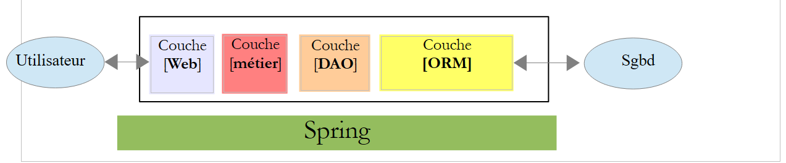
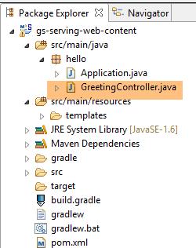
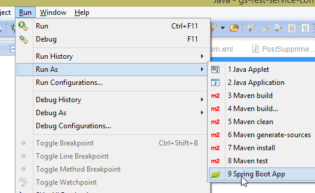
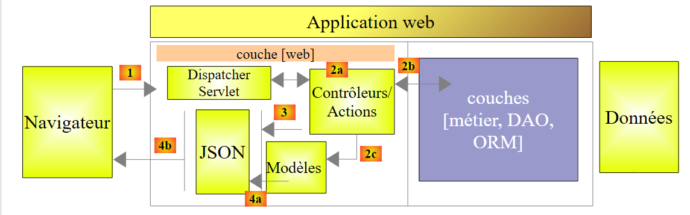
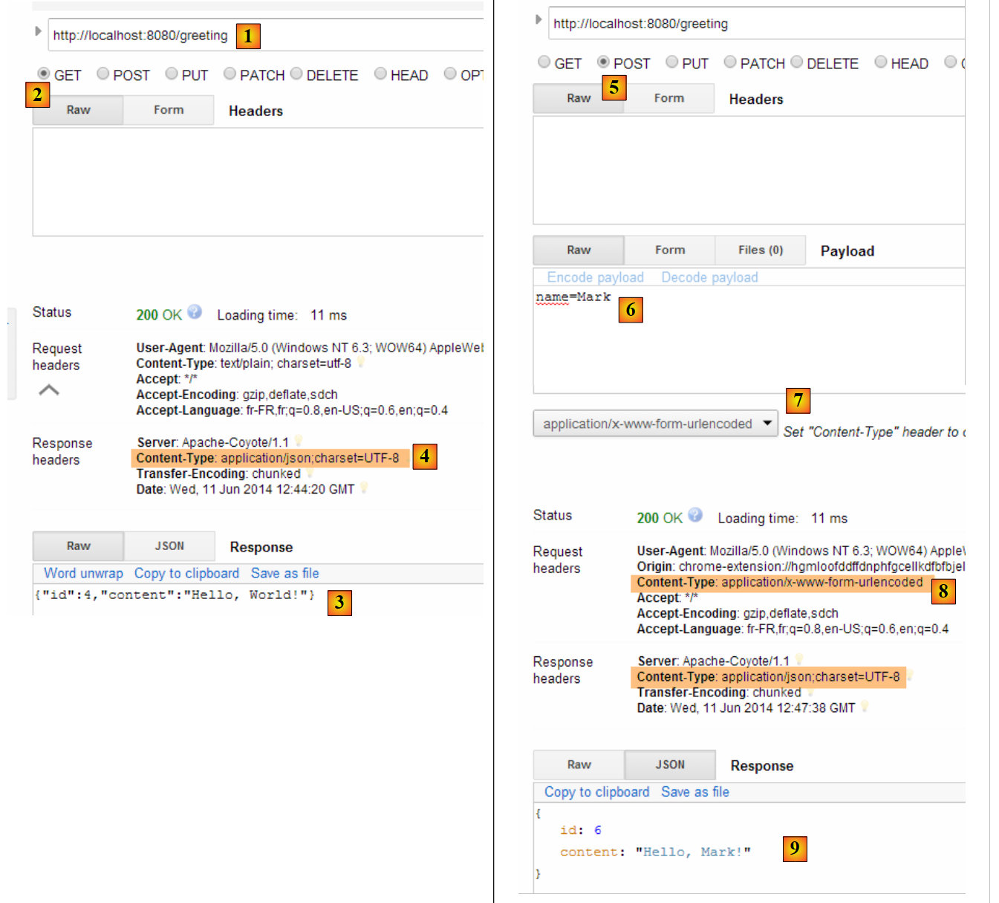
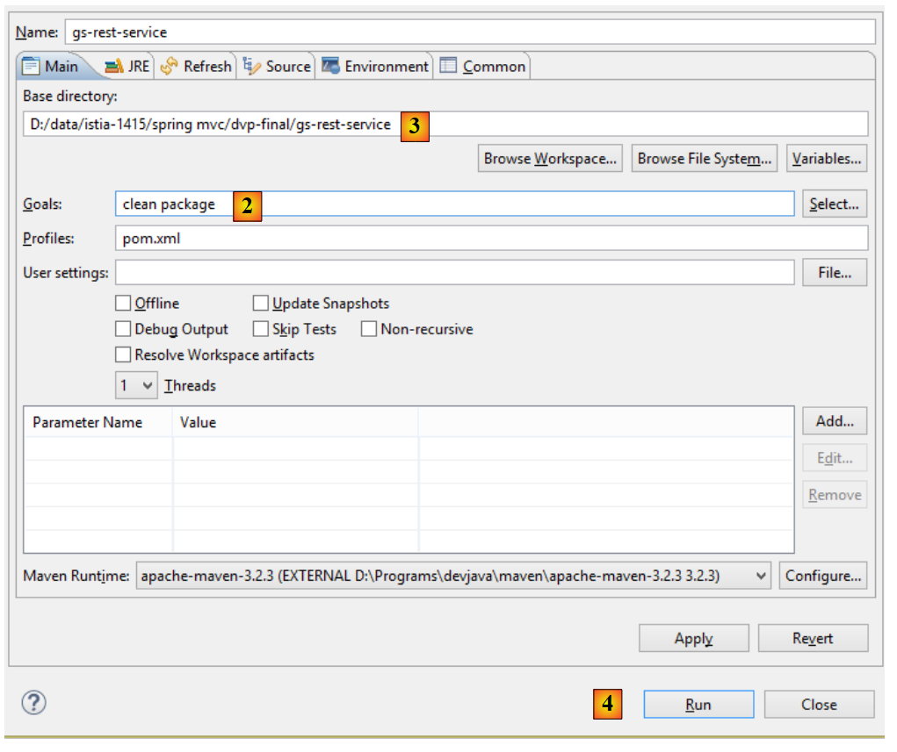

1. Einführung
Das PDF dieses Dokuments ist |HIER| verfügbar.
Die Beispiele in diesem Dokument sind |HIER| verfügbar.
Hier möchten wir anhand von Beispielen die Schlüsselkonzepte von Spring MVC vorstellen, einem Java-Web-Framework, das eine Grundlage für die Entwicklung von Webanwendungen nach dem MVC-Muster (Model–View–Controller) bietet. Spring MVC ist ein Teil des Spring-Ökosystems [http://projects.spring.io/spring-framework/]. Außerdem stellen wir die Thymeleaf-View-Engine [http://www.thymeleaf.org/] vor.
Dieser Kurs richtet sich an Leser mit fundierten Kenntnissen der Programmiersprache Java. Vorkenntnisse in der Webprogrammierung sind nicht erforderlich.
Obwohl dieses Dokument detailliert ist, ist es wahrscheinlich unvollständig. Spring ist ein umfangreiches Framework mit vielen Verzweigungen. Um mehr über Spring MVC zu erfahren, können Sie die folgenden Ressourcen konsultieren:
- das Referenzdokument zum Spring-Framework [http://docs.spring.io/spring/docs/current/spring-framework-reference/pdf/spring-framework-reference.pdf];
- Zahlreiche Spring-Tutorials finden Sie unter [http://spring.io/guides]
- die [developpez.com]-Website, die sich Spring widmet [http://spring.developpez.com/].
Dieses Dokument wurde so verfasst, dass es auch ohne Computer gelesen werden kann. Daher enthält es viele Screenshots.
1.1. Quellen
Dieses Dokument stützt sich auf zwei Hauptquellen:
- [Einführung in ASP.NET MVC anhand von Beispielen]. Spring MVC und ASP.NET MVC sind zwei ähnliche Frameworks, wobei das letztere deutlich später als das erstere entwickelt wurde. Um die beiden Frameworks zu vergleichen, bin ich dem gleichen Ablauf gefolgt wie im Dokument zu ASP.NET MVC;
- Das Dokument zu ASP.NET MVC enthält derzeit (Dezember 2014) keine Fallstudie mit einer Lösung. Ich habe hier die aus dem Dokument [AngularJS / Spring 4 Tutorial] verwendet, die ich wie folgt angepasst habe:
- Die Fallstudie in [AngularJS / Spring 4 Tutorial] handelt von einer Client/Server-Anwendung, bei der der Server ein mit Spring MVC erstellter Webservice / JSON ist und der Client ein AngularJS-Client;
- In diesem Dokument verwenden wir denselben Webdienst/JSON, aber der Client ist eine zweischichtige Webanwendung [jQuery-Client] / [Webdienst/JSON];
Zusätzlich zu diesen Quellen habe ich im Internet nach Antworten auf meine Fragen gesucht. Die Website [http://stackoverflow.com/] war für mich besonders hilfreich.
1.2. Verwendete Tools
Die folgenden Beispiele wurden in der folgenden Umgebung getestet:
- Windows 8.1 Pro 64-Bit-Rechner;
- JDK 1.8;
- Spring Tool Suite 3.6.3 IDE (siehe Abschnitt 9.3);
- Chrome-Browser (andere Browser wurden nicht verwendet);
- Chrome-Erweiterung [Advanced Rest Client] (siehe Abschnitt 9.6);
Hinweis zu JDK 1.8: Eine der Methoden in der Fallstudie verwendet eine Methode aus dem Paket [java.lang] in Java 8.
Alle Beispiele sind Maven-Projekte, die in Eclipse, IntelliJ IDEA oder NetBeans geöffnet werden können. Im Folgenden stammen die Screenshots aus der Spring Tool Suite IDE, einer Variante von Eclipse.
1.3. Die Beispiele
Die Beispiele stehen |HIER| als ZIP-Datei zum Download bereit.
 |
Um alle Projekte in STS zu laden, gehen Sie wie folgt vor:
 |
 |
- Importieren Sie in [1-3] die Maven-Projekte;
 |
- Geben Sie in [4] den Ordner „examples“ an;
- Wählen Sie in [5] alle Projekte im Ordner aus;
- Bestätigen Sie in [6];
- in [7] die importierten Projekte;
1.4. Die Rolle von Spring MVC in einer Webanwendung
Betrachten wir Spring MVC im Kontext der Entwicklung einer Webanwendung. Meistens basiert diese auf einer mehrschichtigen Architektur wie der folgenden:
 |
- Die [Web]-Schicht ist die Schicht, die mit dem Benutzer der Webanwendung in Kontakt steht. Der Benutzer interagiert mit der Webanwendung über Webseiten, die in einem Browser angezeigt werden. Spring MVC befindet sich in dieser Schicht und nur in dieser Schicht;
- Die [Business]-Schicht implementiert die Geschäftslogik der Anwendung, wie beispielsweise die Berechnung eines Gehalts oder einer Rechnung. Diese Schicht nutzt Daten vom Benutzer über die [Web]-Schicht und aus dem DBMS über die [DAO]-Schicht;
- Die [DAO]-Schicht (Data Access Objects), die [ORM]-Schicht (Object Relational Mapper) und der JDBC-Treiber verwalten den Zugriff auf Daten im DBMS. Die [ORM]-Schicht fungiert als Brücke zwischen den von der [DAO]-Schicht verwalteten Objekten und den Zeilen und Spalten von Tabellen in einer relationalen Datenbank. Hier verwenden wir das Hibernate-ORM. Eine Spezifikation namens JPA (Java Persistence API) ermöglicht es uns, das verwendete ORM zu abstrahieren, sofern es diese Spezifikationen implementiert. Dies ist bei Hibernate und anderen Java-ORMs der Fall. Wir werden die ORM-Schicht daher im Folgenden als JPA-Schicht bezeichnen;
- die Integration der Schichten wird vom Spring-Framework übernommen;
Die meisten der unten aufgeführten Beispiele verwenden nur eine einzige Schicht, die [Web]-Schicht:
 |
Dieses Dokument schließt jedoch mit der Erstellung einer mehrschichtigen Webanwendung ab:
 |
Der Browser stellt eine Verbindung zu einer mit Spring MVC / Thymeleaf implementierten [Web1]-Anwendung her, die ihre Daten von einem ebenfalls mit Spring MVC implementierten [Web2]-Webservice abruft. Diese zweite Webanwendung greift auf eine Datenbank zu.
1.5. Das Spring MVC-Entwicklungsmodell
Spring MVC implementiert das MVC-Architekturmuster (Model–View–Controller) wie folgt:
 |
Die Verarbeitung einer Client-Anfrage verläuft wie folgt:
- Anfrage – die angeforderten URLs haben die Form http://machine:port/contexte/Action/param1/param2/....?p1=v1&p2=v2&... Der [Front Controller] verwendet eine Konfigurationsdatei oder Java-Annotationen, um die Anfrage an den richtigen Controller und die richtige Aktion innerhalb dieses Controllers weiterzuleiten. Dazu nutzt er das Feld [Action] der URL. Der Rest der URL [/param1/param2/...] besteht aus optionalen Parametern, die an die Aktion übergeben werden. Das C in MVC bezieht sich hier auf die Kette [Front Controller, Controller, Action]. Wenn kein Controller die angeforderte Aktion verarbeiten kann, antwortet der Webserver, dass die angeforderte URL nicht gefunden wurde.
- Verarbeitung
- Die ausgewählte Aktion kann die Parameter verwenden, die ihr vom [Front Controller] übergeben wurden. Diese können aus verschiedenen Quellen stammen:
- dem Pfad [/param1/param2/...] der URL,
- die Parameter [p1=v1&p2=v2] der URL,
- aus Parametern, die der Browser mit seiner Anfrage übermittelt hat;
- Bei der Verarbeitung der Benutzeranfrage benötigt die Aktion möglicherweise die [Business]-Schicht [2b]. Sobald die Anfrage des Clients verarbeitet wurde, kann dies verschiedene Antworten auslösen. Ein klassisches Beispiel ist:
- eine Fehlerseite, wenn die Anfrage nicht korrekt verarbeitet werden konnte
- ansonsten eine Bestätigungsseite
- Die Aktion weist eine bestimmte Ansicht an, diese darzustellen [3]. Diese Ansicht zeigt Daten an, die als View-Modell bezeichnet werden. Dies ist das „M“ in MVC. Die Aktion erstellt dieses View-Modell [2c] und weist eine Ansicht an, diese darzustellen [3];
- Antwort – die ausgewählte Ansicht V verwendet das von der Aktion erstellte Modell M, um die dynamischen Teile der HTML-Antwort zu initialisieren, die sie an den Client senden muss, und sendet dann diese Antwort.
Lassen Sie uns nun die Beziehung zwischen der MVC-Webarchitektur und der Schichtenarchitektur klären. Je nachdem, wie wir das Modell definieren, können diese beiden Konzepte miteinander in Verbindung stehen oder auch nicht. Betrachten wir eine einschichtige Spring-MVC-Webanwendung:
 |
Wenn wir die [Web]-Schicht mit Spring MVC implementieren, haben wir zwar eine MVC-Webarchitektur, aber keine mehrschichtige Architektur. Hier übernimmt die [Web]-Schicht alles: Darstellung, Geschäftslogik und Datenzugriff. Diese Aufgaben werden von den Aktionen ausgeführt.
Betrachten wir nun eine mehrschichtige Webarchitektur:
 |
Die [Web]-Schicht kann ohne Framework und ohne Befolgung des MVC-Modells implementiert werden. Wir haben dann eine mehrschichtige Architektur, aber die Web-Schicht implementiert das MVC-Modell nicht.
In der .NET-Welt kann die oben genannte [Web]-Schicht beispielsweise mit ASP.NET MVC implementiert werden, was zu einer mehrschichtigen Architektur mit einer [Web]-Schicht im MVC-Stil führt. Sobald dies geschehen ist, können wir diese ASP.NET MVC-Schicht durch eine klassische ASP.NET-Schicht (WebForms) ersetzen, während der Rest (Geschäftslogik, DAO, ORM) unverändert bleibt. Wir haben dann eine Schichtenarchitektur mit einer [Web]-Schicht, die nicht mehr MVC-basiert ist.
In MVC haben wir gesagt, dass das M-Modell das der V-Ansicht sei, d. h. die Menge der von der V-Ansicht angezeigten Daten. Es gibt eine weitere Definition des M-Modells in MVC:
 |
Viele Autoren sind der Ansicht, dass das, was rechts von der [Web]-Schicht liegt, das M-Modell von MVC bildet. Um Mehrdeutigkeiten zu vermeiden, können wir uns auf Folgendes beziehen:
- das Domänenmodell, wenn wir uns auf alles rechts von der [Web]-Schicht beziehen
- das View-Modell, wenn wir uns auf die von einer Ansicht V angezeigten Daten beziehen
Im Folgenden bezieht sich der Begriff „M-Modell“ ausschließlich auf das Modell einer V-Ansicht.
1.6. Ein erstes Spring-MVC-Projekt
Von nun an werden wir mit der Spring Tool Suite (STS) IDE arbeiten, einer für Spring angepassten Version von Eclipse. Die Website [http://spring.io/guides] bietet Einführungs-Tutorials, um das Spring-Ökosystem zu erkunden. Wir werden einem davon folgen, um die für ein Spring-MVC-Projekt erforderliche Maven-Konfiguration zu erlernen.
Hinweis: Die meisten Anfänger werden die Details des Projekts nicht vollständig verstehen. Das ist nicht wichtig. Diese Details werden später in diesem Dokument erläutert. Wir werden einfach den Schritten folgen.
1.6.1. Das Demo-Projekt
 |
- In [1] importieren wir einen der Spring-Guides;
 |
- in [2] wählen wir das Beispiel [Serving Web Content] aus;
- in [3] wählen wir das Maven-Projekt aus;
- unter [4] wählen wir die endgültige Version des Leitfadens aus;
- in [5] bestätigen wir;
- in [6] das importierte Projekt;
Sehen wir uns das Projekt an, beginnend mit seiner Maven-Konfiguration.
1.6.2. Maven-Konfiguration
Die Datei [pom.xml] sieht wie folgt aus:
<?xml version="1.0" encoding="UTF-8"?>
<project xmlns="http://maven.apache.org/POM/4.0.0" xmlns:xsi="http://www.w3.org/2001/XMLSchema-instance"
xsi:schemaLocation="http://maven.apache.org/POM/4.0.0 http://maven.apache.org/xsd/maven-4.0.0.xsd">
<modelVersion>4.0.0</modelVersion>
<groupId>org.springframework</groupId>
<artifactId>gs-serving-web-content</artifactId>
<version>0.1.0</version>
<parent>
<groupId>org.springframework.boot</groupId>
<artifactId>spring-boot-starter-parent</artifactId>
<version>1.1.9.RELEASE</version>
</parent>
<dependencies>
<dependency>
<groupId>org.springframework.boot</groupId>
<artifactId>spring-boot-starter-thymeleaf</artifactId>
</dependency>
</dependencies>
<properties>
<start-class>hello.Application</start-class>
</properties>
<build>
<plugins>
<plugin>
<groupId>org.springframework.boot</groupId>
<artifactId>spring-boot-maven-plugin</artifactId>
</plugin>
</plugins>
</build>
<repositories>
<repository>
<id>spring-milestone</id>
<url>https://repo.spring.io/libs-release</url>
</repository>
</repositories>
<pluginRepositories>
<pluginRepository>
<id>spring-milestone</id>
<url>https://repo.spring.io/libs-release</url>
</pluginRepository>
</pluginRepositories>
</project>
- Zeilen 6–8: Die Maven-Projekteigenschaften. Ein [<packaging>]-Tag, das den Typ der vom Maven-Build erzeugten Datei angibt, fehlt. In Ermangelung dessen wird der Typ [jar] verwendet. Die Anwendung ist daher eine konsolenbasierte ausführbare Anwendung und keine Webanwendung, bei der die Verpackung [war] wäre;
- Zeilen 10–14: Das Maven-Projekt hat ein übergeordnetes Projekt [spring-boot-starter-parent]. Dieses definiert die meisten Abhängigkeiten des Projekts. Diese können ausreichend sein – in diesem Fall werden keine zusätzlichen Abhängigkeiten hinzugefügt – oder auch nicht; in diesem Fall werden die fehlenden Abhängigkeiten hinzugefügt;
- Zeilen 17–20: Das Artefakt [spring-boot-starter-thymeleaf] enthält die Bibliotheken, die für ein Spring-MVC-Projekt in Verbindung mit einer View-Engine namens [Thymeleaf] erforderlich sind. Dieses Artefakt umfasst eine sehr große Anzahl von Bibliotheken, darunter auch solche für einen eingebetteten Tomcat-Server. Die Anwendung wird auf diesem Server ausgeführt;
Die in dieser Konfiguration enthaltenen Bibliotheken sind zahlreich:
 |  |
Oben sehen wir die Tomcat-Server-Archive.
Spring Boot ist ein Zweig des Spring-Ökosystems [http://projects.spring.io/spring-boot/]. Dieses Projekt zielt darauf ab, den Konfigurationsaufwand für Spring-Projekte zu minimieren. Um dies zu erreichen, führt Spring Boot eine automatische Konfiguration auf der Grundlage der im Klassenpfad des Projekts vorhandenen Abhängigkeiten durch. Spring Boot stellt viele gebrauchsfertige Abhängigkeiten bereit. Beispielsweise enthält die im vorherigen Maven-Projekt gefundene Abhängigkeit [spring-boot-starter-thymeleaf] alle Abhängigkeiten, die für eine Spring-MVC-Anwendung mit der View-Engine [Thymeleaf] erforderlich sind. Mit diesen beiden Funktionen:
- gebrauchsfertige Abhängigkeiten;
- Autokonfiguration auf Basis dieser Abhängigkeiten und „sinnvolle“ Standardwerte, können Sie sehr schnell eine funktionierende Spring-MVC-Anwendung erstellen. Dies ist bei dem hier untersuchten Projekt der Fall;
1.6.3. Die Architektur einer Spring-MVC-Anwendung
Spring MVC implementiert das MVC-Architekturmuster (Model–View–Controller):
 |
Die Verarbeitung einer Client-Anfrage verläuft wie folgt:
- Anfrage – die angeforderten URLs haben die Form http://machine:port/contexte/Action/param1/param2/....?p1=v1&p2=v2&... Das [Dispatcher-Servlet] ist die Spring-Klasse, die eingehende URLs verarbeitet. Es „leitet“ die URL an die Aktion weiter, die sie bearbeiten soll. Diese Aktionen sind Methoden bestimmter Klassen, die als [Controller] bezeichnet werden. Das C in MVC steht hier für die Kette [Dispatcher-Servlet, Controller, Aktion]. Wenn keine Aktion für die Bearbeitung der eingehenden URL konfiguriert wurde, antwortet das [Dispatcher-Servlet], dass die angeforderte URL nicht gefunden wurde (404 NOT FOUND-Fehler);
- Bei der Verarbeitung
- Die ausgewählte Aktion kann die Parameter verwenden, die ihr vom [Dispatcher Servlet] übergeben wurden. Diese können aus verschiedenen Quellen stammen:
- dem Pfad [/param1/param2/...] der URL,
- die URL-Parameter [p1=v1&p2=v2],
- aus Parametern, die der Browser mit seiner Anfrage übermittelt hat;
- Bei der Verarbeitung der Benutzeranfrage benötigt die Aktion möglicherweise die [Business]-Schicht [2b]. Sobald die Anfrage des Clients verarbeitet wurde, kann dies verschiedene Antworten auslösen. Ein klassisches Beispiel ist:
- eine Fehlerseite, wenn die Anfrage nicht korrekt verarbeitet werden konnte
- ansonsten eine Bestätigungsseite
- die Aktion weist an, eine bestimmte Ansicht anzuzeigen [3]. Diese Ansicht zeigt Daten an, die als View-Modell bezeichnet werden. Dies ist das M in MVC. Die Aktion erstellt dieses M-Modell [2c] und weist an, eine V-Ansicht anzuzeigen [3];
- Antwort – die ausgewählte Ansicht V verwendet das von der Aktion erstellte Modell M, um die dynamischen Teile der HTML-Antwort zu initialisieren, die sie an den Client senden muss, und sendet dann diese Antwort.
Wir werden diese verschiedenen Elemente im untersuchten Projekt näher betrachten.
1.6.4. Der Controller C
 |
Die importierte Anwendung verfügt über den folgenden Controller:
package hello;
import org.springframework.stereotype.Controller;
import org.springframework.ui.Model;
import org.springframework.web.bind.annotation.RequestMapping;
import org.springframework.web.bind.annotation.RequestParam;
@Controller
public class GreetingController {
@RequestMapping("/greeting")
public String greeting(@RequestParam(value="name", required=false, defaultValue="World") String name, Model model) {
model.addAttribute("name", name);
return "greeting";
}
}
- Zeile 8: Die Annotation [@Controller] macht die Klasse [GreetingController] zu einem Spring-Controller, was bedeutet, dass ihre Methoden für die Verarbeitung von URLs registriert sind. Ein Spring-Controller ist ein Singleton. Es wird nur eine einzige Instanz erstellt;
- Zeile 11: Die Annotation [@RequestMapping] gibt die von der Methode verarbeitete URL an, in diesem Fall die URL [/greeting]. Wir werden später sehen, dass diese URL parametrisiert werden kann und dass es möglich ist, diese Parameter abzurufen;
- Zeile 12: Die Methode akzeptiert zwei Parameter:
- [String name]: Dieser Parameter wird durch einen Parameter namens [name] in der verarbeiteten Anfrage initialisiert, zum Beispiel [/greeting?name=alfonse]. Dieser Parameter ist optional [required=false] und wenn er nicht vorhanden ist, nimmt der Parameter [name] den Wert 'World' an [defaultValue="World"],
- [Model model] ist ein View-Modell. Es wird leer übergeben, und es ist die Aufgabe der Aktion (der greeting-Methode), es zu füllen. Dieses Modell wird an die Ansicht übergeben, die die Aktion rendert. Es handelt sich also um ein View-Modell;
- Zeile 13: Der Wert von [name] wird in das View-Modell gesetzt. Die Klasse [Model] verhält sich wie ein Dictionary;
- Zeile 14: Die Methode gibt den Namen der Ansicht zurück, die das erstellte Modell anzeigen soll. Der genaue Name der Ansicht hängt von der [Thymeleaf]-Konfiguration ab. Fehlt eine solche Konfiguration, lautet die hier angezeigte Ansicht [/templates/greeting.html], wobei sich der Ordner [templates] im Stammverzeichnis des Klassenpfads des Projekts befinden muss;
Sehen wir uns unser Eclipse-Projekt einmal an:
 |
Die Ordner [src/main/java] und [src/main/resources] sind beide Ordner, deren Inhalt zum Klassenpfad des Projekts hinzugefügt wird. In [src/main/java] werden die kompilierten Versionen des Java-Quellcodes abgelegt. Der Inhalt des Ordners [src/main/resources] wird unverändert zum Klassenpfad hinzugefügt. Wir sehen also, dass sich der Ordner [templates] im Klassenpfad des Projekts befindet [1].
Sie können dies [2-3] im Eclipse-Fenster [Navigator] überprüfen [Fenster / Ansicht anzeigen / Sonstiges / Allgemein / Navigator]. Der Ordner [target] wird durch das Kompilieren (oder „Erstellen“) des Projekts erstellt. Der Ordner [classes] stellt die Wurzel des Klassenpfads dar. Sie können sehen, dass der Ordner [templates] dort vorhanden ist.
1.6.5. Die Ansicht V
In MVC haben wir gerade den Controller C und das Model M kennengelernt. Die View V wird hier durch die folgende Datei [greeting.html] dargestellt:
<!DOCTYPE HTML>
<html xmlns:th="http://www.thymeleaf.org">
<head>
<title>Getting Started: Serving Web Content</title>
<meta http-equiv="Content-Type" content="text/html; charset=UTF-8" />
</head>
<body>
<p th:text="'Hello, ' + ${name} + '!'" />
</body>
</html>
- Zeile 2: der Thymeleaf-Tag-Namespace;
- Zeile 8: ein <p>-Tag (Absatz) mit einem Thymeleaf-Attribut. Das Attribut [th:text] legt den Inhalt des Absatzes fest. Innerhalb der Zeichenkette haben wir den Ausdruck [${name}]. Das bedeutet, dass wir den Wert des Attributs [name] aus der View-Vorlage verwenden möchten. Erinnern Sie sich nun daran, dass dieses Attribut durch die Aktion zum Modell hinzugefügt wurde:
model.addAttribute("name", name);
Der erste Parameter legt den Namen des Attributs fest, der zweite seinen Wert.
1.6.6. Ausführung
 |
Die Klasse [Application.java] ist die ausführbare Klasse des Projekts. Ihr Code lautet wie folgt:
package hello;
import org.springframework.boot.autoconfigure.EnableAutoConfiguration;
import org.springframework.boot.SpringApplication;
import org.springframework.context.annotation.ComponentScan;
@ComponentScan
@EnableAutoConfiguration
public class Application {
public static void main(String[] args) {
SpringApplication.run(Application.class, args);
}
}
- Zeile 11: Die Klasse ist mit einer für Konsolenanwendungen spezifischen [main]-Methode ausführbar. Die [SpringApplication]-Klasse in Zeile 12 startet den in den Abhängigkeiten vorhandenen Tomcat-Server und stellt den Webdienst darauf bereit;
- Zeile 4: Wir sehen, dass die Klasse [SpringApplication] zum Projekt [Spring Boot] gehört;
- Zeile 12: Der erste Parameter ist die Klasse, die das Projekt konfiguriert, der zweite enthält etwaige zusätzliche Parameter;
- Zeile 8: Die Annotation [@EnableAutoConfiguration] weist Spring Boot an, das Projekt zu konfigurieren;
- Zeile 7: Die Annotation [@ComponentScan] bewirkt, dass das Verzeichnis, das die Klasse [Application] enthält, nach Spring-Komponenten durchsucht wird. Es wird eine gefunden: die Klasse [GreetingController], die die Annotation [@Controller] trägt, wodurch sie zu einer Spring-Komponente wird;
Führen wir das Projekt aus:
 |
Wir erhalten die folgenden Konsolenprotokolle:
- Zeile 13: Der Tomcat-Server startet auf Port 8080 (Zeile 12);
- Zeile 17: Das Servlet [DispatcherServlet] ist vorhanden;
- Zeile 20: Die Methode [hello.GreetingController.greeting] wurde erkannt, zusammen mit der von ihr verarbeiteten URL [/greeting];
Um die Webanwendung zu testen, rufen wir die URL [http://localhost:8080/greeting] auf:
 |  |
Es kann interessant sein, die vom Server gesendeten HTTP-Header anzusehen. Dazu verwenden wir das Chrome-Plugin namens [Advanced Rest Client] (siehe Abschnitt 9.6):
 |
- in [1] die angeforderte URL;
- in [2] wird die GET-Methode verwendet;
- in [3] hat der Server angegeben, dass er eine Antwort im HTML-Format sendet;
- in [4] die HTML-Antwort;
- in [5] fordern wir dieselbe URL an, diesmal jedoch mit einer POST-Anfrage;
- in [7] werden die Informationen im [urlencoded]-Format an den Server gesendet;
- in [6] der Parameter „name“ mit seinem Wert;
- in [8] teilt der Browser dem Server mit, dass er [urlencoded]-Informationen sendet;
- in [9] die HTML-Antwort vom Server;
 |  |  |
1.6.7. Erstellen eines ausführbaren Archivs
Es ist möglich, ein ausführbares Archiv außerhalb von Eclipse zu erstellen. Die erforderliche Konfiguration befindet sich in der Datei [pom.xml]:
<properties>
<start-class>hello.Application</start-class>
</properties>
<build>
<plugins>
<plugin>
<groupId>org.springframework.boot</groupId>
<artifactId>spring-boot-maven-plugin</artifactId>
</plugin>
</plugins>
</build>
- Die Zeilen 7–10 definieren das Plugin, das das ausführbare Archiv erstellt;
- Zeile 2 definiert die ausführbare Klasse des Projekts;
So gehen Sie vor:
 |
- in [1]: Wir führen ein Maven-Ziel aus;
 |
- in [2]: Es gibt zwei Ziele: [clean], um den Ordner [target] aus dem Maven-Projekt zu löschen, und [package], um ihn neu zu generieren;
- in [3]: Der generierte Ordner [target] wird in diesem Ordner erstellt;
- in [4]: Das Ziel wird generiert;
Hinweis: Damit die Generierung erfolgreich ist, muss die von STS verwendete JVM ein JDK sein [Fenster / Einstellungen / Java / Installierte JREs]:
 |
In den Protokollen, die in der Konsole angezeigt werden, ist es wichtig, das Plugin [spring-boot-maven-plugin] zu sehen. Dies ist das Plugin, das das ausführbare Archiv generiert.
Navigieren Sie über die Konsole zum generierten Ordner:
gs-serving-web-content-complete\target>dir
...
Répertoire de D:\data\istia-1415\spring mvc\dvp\gs-serving-web-content-complete
\target
27/11/2014 17:07 <DIR> .
27/11/2014 17:07 <DIR> ..
27/11/2014 17:07 <DIR> classes
27/11/2014 17:07 <DIR> generated-sources
27/11/2014 17:07 13 419 551 gs-serving-web-content-0.1.0.jar
27/11/2014 17:07 3 522 gs-serving-web-content-0.1.0.jar.original
27/11/2014 17:07 <DIR> maven-archiver
27/11/2014 17:07 <DIR> maven-status
- Zeile 12: das generierte Archiv;
Dieses Archiv wird wie folgt ausgeführt:
gs-serving-web-content-complete\target>java -jar gs-serving-web-content-0.1.0.jar
. ____ _ __ _ _
/\\ / ___'_ __ _ _(_)_ __ __ _ \ \ \ \
( ( )\___ | '_ | '_| | '_ \/ _` | \ \ \ \
\\/ ___)| |_)| | | | | || (_| | ) ) ) )
' |____| .__|_| |_|_| |_\__, | / / / /
=========|_|==============|___/=/_/_/_/
:: Spring Boot :: (v1.1.9.RELEASE)
2014-11-27 17:14:50.439 INFO 8172 --- [ main] hello.Application : Starting Application on Gportpers3 with PID 8172 (D:\data\istia-1415\spring mvc\dvp\gs-serving-web-content-complete\target\gs-serving-web-content-0.1.0.jar started by ST in D:\data\istia-1415\spring mvc\dvp\gs-serving-web-content-complete\target)
2014-11-27 17:14:50.491 INFO 8172 --- [ main] ationConfigEmbeddedWebApplicationContext : Refreshing org.springframework.boot.context.embedded.AnnotationConfigEmbeddedWebApplicationContext@12f4ec3a: startup date [Thu Nov 27 17:14:50 CET 2014]; root of context hierarchy
Hinweis: Sie müssen zunächst alle Webdienste beenden, die möglicherweise in Eclipse gestartet wurden (siehe Seite 17).
Nachdem die Webanwendung nun läuft, können Sie über einen Browser darauf zugreifen:
 |
1.6.8. Bereitstellung der Anwendung auf einem Tomcat-Server
Während Spring Boot im Entwicklungsmodus sehr praktisch ist, wird eine Produktionsanwendung auf einem echten Tomcat-Server bereitgestellt. So gehen Sie vor:
Ändern Sie die Datei [pom.xml] wie folgt:
<?xml version="1.0" encoding="UTF-8"?>
<project xmlns="http://maven.apache.org/POM/4.0.0" xmlns:xsi="http://www.w3.org/2001/XMLSchema-instance"
xsi:schemaLocation="http://maven.apache.org/POM/4.0.0 http://maven.apache.org/xsd/maven-4.0.0.xsd">
<modelVersion>4.0.0</modelVersion>
<groupId>org.springframework</groupId>
<artifactId>gs-serving-web-content</artifactId>
<version>0.1.0</version>
<packaging>war</packaging>
<parent>
<groupId>org.springframework.boot</groupId>
<artifactId>spring-boot-starter-parent</artifactId>
<version>1.1.9.RELEASE</version>
</parent>
<dependencies>
<!-- thymeleaf environment -->
<dependency>
<groupId>org.springframework.boot</groupId>
<artifactId>spring-boot-starter-thymeleaf</artifactId>
</dependency>
<!-- war generation -->
<!-- <dependency>
<groupId>org.springframework.boot</groupId>
<artifactId>spring-boot-starter-tomcat</artifactId>
<scope>provided</scope>
</dependency> -->
</dependencies>
<properties>
<start-class>hello.Application</start-class>
</properties>
<build>
<plugins>
<plugin>
<groupId>org.springframework.boot</groupId>
<artifactId>spring-boot-maven-plugin</artifactId>
</plugin>
</plugins>
</build>
<repositories>
<repository>
<id>spring-milestone</id>
<url>https://repo.spring.io/libs-release</url>
</repository>
</repositories>
<pluginRepositories>
<pluginRepository>
<id>spring-milestone</id>
<url>https://repo.spring.io/libs-release</url>
</pluginRepository>
</pluginRepositories>
</project>
Änderungen müssen an zwei Stellen vorgenommen werden:
- Zeile 9: Sie müssen angeben, dass Sie eine WAR-Datei (Web Archive) generieren möchten;
- Zeilen 24–28: Sie müssen eine Abhängigkeit zum Artefakt [spring-boot-starter-tomcat] hinzufügen. Dieses Artefakt enthält alle Tomcat-Klassen in den Abhängigkeiten des Projekts;
- Zeile 27: Dieses Artefakt ist [provided], was bedeutet, dass die entsprechenden Archive nicht in die generierte WAR-Datei aufgenommen werden. Stattdessen befinden sich diese Archive auf dem Tomcat-Server, auf dem die Anwendung ausgeführt wird;
Wenn wir uns die aktuellen Abhängigkeiten des Projekts ansehen, stellen wir fest, dass die Abhängigkeit [spring-boot-starter-tomcat] bereits vorhanden ist:
 |
Es ist daher nicht erforderlich, dies in die [pom.xml]-Datei einzufügen. Wir haben es zur Veranschaulichung auskommentiert.
Außerdem müssen wir die Webanwendung konfigurieren. Da keine [web.xml]-Datei vorhanden ist, erfolgt dies über eine Klasse, die [SpringBootServletInitializer] erweitert:
 |
Die Klasse [ApplicationInitializer] sieht wie folgt aus:
package hello;
import org.springframework.boot.builder.SpringApplicationBuilder;
import org.springframework.boot.context.web.SpringBootServletInitializer;
public class ApplicationInitializer extends SpringBootServletInitializer {
@Override
protected SpringApplicationBuilder configure(SpringApplicationBuilder application) {
return application.sources(Application.class);
}
}
- Zeile 6: Die Klasse [ApplicationInitializer] erweitert die Klasse [SpringBootServletInitializer];
- Zeile 9: Die Methode [configure] wird überschrieben (Zeile 8);
- Zeile 10: Die Klasse, die das Projekt konfiguriert, wird bereitgestellt;
Um das Projekt auszuführen, gehen Sie wie folgt vor:
 |
- Führen Sie in [1] das Projekt auf einem der in der Eclipse-IDE registrierten Server aus;
- Wählen Sie in [2] oben [Tomcat v8.0] aus;
Sobald dies erledigt ist, können Sie die URL [http://localhost:8080/gs-rest-service/greeting/?name=Mitchell] in einen Browser eingeben:
 |
Hinweis: Je nach den Versionen von [Tomcat] und [TC Server Developer] kann diese Ausführung fehlschlagen. Dies war beispielsweise bei [Apache Tomcat 8.0.3 und 8.0.15] der Fall. Im obigen Beispiel wurde die Tomcat-Version [8.0.9] verwendet.
Wir wissen nun, wie man ein WAR-Archiv erstellt. Im weiteren Verlauf werden wir uns mit Spring Boot und dessen ausführbarem JAR-Archiv beschäftigen.
1.7. Ein zweites Spring MVC-Projekt
1.7.1. Das Demo-Projekt
 |
- In [1] importieren wir einen der Spring-Guides;
 |
- in [2] wählen wir das Beispiel [Rest Service] aus;
- in [3] wählen wir das Maven-Projekt aus;
- unter [4] wählen wir die endgültige Version des Leitfadens aus;
- in [5] bestätigen wir;
- in [6] das importierte Projekt;
Webdienste, auf die über Standard-URLs zugegriffen werden kann und die JSON-Daten zurückgeben, werden oft als REST-Dienste (REpresentational State Transfer) bezeichnet. In diesem Dokument werde ich den Dienst, den wir erstellen werden, einfach als Web-/JSON-Dienst bezeichnen. Ein Dienst gilt als RESTful, wenn er bestimmte Regeln befolgt. Ich habe nicht versucht, mich an diese Regeln zu halten.
Betrachten wir nun das importierte Projekt, beginnend mit seiner Maven-Konfiguration.
1.7.2. Maven-Konfiguration
Die Datei [pom.xml] sieht wie folgt aus:
<?xml version="1.0" encoding="UTF-8"?>
<project xmlns="http://maven.apache.org/POM/4.0.0" xmlns:xsi="http://www.w3.org/2001/XMLSchema-instance"
xsi:schemaLocation="http://maven.apache.org/POM/4.0.0 http://maven.apache.org/xsd/maven-4.0.0.xsd">
<modelVersion>4.0.0</modelVersion>
<groupId>org.springframework</groupId>
<artifactId>gs-rest-service</artifactId>
<version>0.1.0</version>
<parent>
<groupId>org.springframework.boot</groupId>
<artifactId>spring-boot-starter-parent</artifactId>
<version>1.1.9.RELEASE</version>
</parent>
<dependencies>
<dependency>
<groupId>org.springframework.boot</groupId>
<artifactId>spring-boot-starter-web</artifactId>
</dependency>
</dependencies>
<properties>
<start-class>hello.Application</start-class>
</properties>
<build>
<plugins>
<plugin>
<groupId>org.springframework.boot</groupId>
<artifactId>spring-boot-maven-plugin</artifactId>
</plugin>
</plugins>
</build>
<repositories>
<repository>
<id>spring-releases</id>
<url>https://repo.spring.io/libs-release</url>
</repository>
</repositories>
<pluginRepositories>
<pluginRepository>
<id>spring-releases</id>
<url>https://repo.spring.io/libs-release</url>
</pluginRepository>
</pluginRepositories>
</project>
- Zeilen 6–8: Die Maven-Projekteigenschaften. Ein [<packaging>]-Tag, das den vom Maven-Build erzeugten Dateityp angibt, fehlt. In diesem Fall wird der Typ [jar] verwendet. Die Anwendung ist daher eine konsolenbasierte ausführbare Anwendung und keine Webanwendung; in diesem Fall wäre die Verpackung [war];
- Zeilen 10–14: Das Maven-Projekt hat ein übergeordnetes Projekt [spring-boot-starter-parent]. Dieses definiert die meisten Abhängigkeiten des Projekts. Diese können ausreichend sein – in diesem Fall werden keine zusätzlichen Abhängigkeiten hinzugefügt – oder auch nicht; in diesem Fall werden die fehlenden Abhängigkeiten hinzugefügt;
- Zeilen 17–20: Das Artefakt [spring-boot-starter-web] enthält die Bibliotheken, die für ein Spring-MVC-Webservice-Projekt erforderlich sind, bei dem keine Ansichten generiert werden. Dieses Artefakt umfasst eine sehr große Anzahl von Bibliotheken, darunter auch solche für einen eingebetteten Tomcat-Server. Die Anwendung wird auf diesem Server ausgeführt;
Die in dieser Konfiguration enthaltenen Bibliotheken sind zahlreich:
 |  |
Oben sehen wir die drei Tomcat-Server-Archive.
1.7.3. Die Architektur eines Spring [Web / JSON]-Dienstes
Schauen wir uns an, wie Spring MVC das MVC-Modell umsetzt:
 |
Die Bearbeitung einer Kundenanfrage läuft wie folgt ab:
- Anfrage – die angeforderten URLs haben die Form http://machine:port/contexte/Action/param1/param2/....?p1=v1&p2=v2&... Das [Dispatcher-Servlet] ist die Spring-Klasse, die eingehende URLs verarbeitet. Es „leitet“ die URL an die Aktion weiter, die sie verarbeiten muss. Diese Aktionen sind Methoden bestimmter Klassen, die als [Controller] bezeichnet werden. Das C in MVC steht hier für die Kette [Dispatcher-Servlet, Controller, Aktion]. Wenn keine Aktion für die Verarbeitung der eingehenden URL konfiguriert wurde, antwortet das [Dispatcher-Servlet], dass die angeforderte URL nicht gefunden wurde (404 NOT FOUND-Fehler);
- Bei der Verarbeitung
- Die ausgewählte Aktion kann die Parameter verwenden, die ihr vom [Dispatcher Servlet] übergeben wurden. Diese können aus verschiedenen Quellen stammen:
- dem Pfad [/param1/param2/...] der URL,
- die URL-Parameter [p1=v1&p2=v2],
- aus Parametern, die der Browser mit seiner Anfrage übermittelt hat;
- Bei der Verarbeitung der Benutzeranfrage benötigt die Aktion möglicherweise die [Business]-Schicht [2b]. Sobald die Anfrage des Clients verarbeitet wurde, kann dies verschiedene Antworten auslösen. Ein klassisches Beispiel ist:
- eine Fehlerseite, wenn die Anfrage nicht korrekt verarbeitet werden konnte
- ansonsten eine Bestätigungsseite
- die Aktion weist eine bestimmte Ansicht an, diese darzustellen [3]. Diese Ansicht zeigt Daten an, die als View-Modell bezeichnet werden. Dies ist das M in MVC. Die Aktion erstellt dieses M-Modell [2c] und weist eine V-Ansicht an, diese darzustellen [3];
- Antwort – die ausgewählte Ansicht V verwendet das von der Aktion erstellte Modell M, um die dynamischen Teile der HTML-Antwort zu initialisieren, die sie an den Client senden muss, und sendet dann diese Antwort.
Bei einem Webdienst / JSON wird die vorstehende Architektur leicht modifiziert:
 |
- In [4a] wird das Modell, bei dem es sich um eine Java-Klasse handelt, durch eine JSON-Bibliothek in eine JSON-Zeichenkette umgewandelt;
- in [4b] wird diese JSON-Zeichenkette an den Browser gesendet;
1.7.4. Der C-Controller
 |
Die importierte Anwendung verfügt über den folgenden Controller:
package hello;
import java.util.concurrent.atomic.AtomicLong;
import org.springframework.web.bind.annotation.RequestMapping;
import org.springframework.web.bind.annotation.RequestParam;
import org.springframework.web.bind.annotation.RestController;
@RestController
public class GreetingController {
private static final String template = "Hello, %s!";
private final AtomicLong counter = new AtomicLong();
@RequestMapping("/greeting")
public Greeting greeting(@RequestParam(value = "name", defaultValue = "World") String name) {
return new Greeting(counter.incrementAndGet(), String.format(template, name));
}
}
- Zeile 9: Die Annotation [@RestController] macht die Klasse [GreetingController] zu einem Spring-Controller, was bedeutet, dass ihre Methoden für die Verarbeitung von URLs registriert sind. Wir haben bereits die ähnliche Annotation [@Controller] gesehen. Der Rückgabetyp der Methoden dieses Controllers war [String], also der Name der anzuzeigenden Ansicht. Hier ist das anders. Die Methoden eines [@RestController] geben Objekte zurück, die serialisiert und an den Browser gesendet werden. Die Art der durchgeführten Serialisierung hängt von der Spring-MVC-Konfiguration ab. Hier werden sie in JSON serialisiert. Das Vorhandensein einer JSON-Bibliothek in den Projektabhängigkeiten bewirkt, dass Spring Boot das Projekt automatisch auf diese Weise konfiguriert;
- Zeile 14: Die Annotation [@RequestMapping] gibt die von der Methode bearbeitete URL an, in diesem Fall die URL [/greeting];
- Zeile 15: Die Annotation [@RequestParam] haben wir bereits erläutert. Das von der Methode zurückgegebene Ergebnis ist ein Objekt vom Typ [Greeting].
- Zeile 12: eine Long-Integer-Variable vom Typ „atomic“. Das bedeutet, dass sie parallelen Zugriff unterstützt. Es kann vorkommen, dass mehrere Threads gleichzeitig die Variable [counter] inkrementieren wollen. Dies wird ordnungsgemäß gehandhabt. Ein Thread kann den Wert des Zählers erst lesen, wenn der Thread, der ihn gerade ändert, seine Änderung abgeschlossen hat.
1.7.5. Das M-Modell
Das durch die vorherige Methode erzeugte M-Modell ist das folgende [Greeting]-Objekt:
 |
package hello;
public class Greeting {
private final long id;
private final String content;
public Greeting(long id, String content) {
this.id = id;
this.content = content;
}
public long getId() {
return id;
}
public String getContent() {
return content;
}
}
Die Konvertierung dieses Objekts in JSON erzeugt die Zeichenfolge {"id":n,"content":"text"}. Letztendlich hat die von der Controller-Methode erzeugte JSON-Zeichenfolge das folgende Format:
{"id":2,"content":"Hello, World!"}
oder
{"id":2,"content":"Hallo, John!"}
1.7.6. Ausführung
 |
Die Klasse [Application.java] ist die ausführbare Klasse des Projekts. Ihr Code lautet wie folgt:
package hello;
import org.springframework.boot.autoconfigure.EnableAutoConfiguration;
import org.springframework.boot.SpringApplication;
import org.springframework.context.annotation.ComponentScan;
@ComponentScan
@EnableAutoConfiguration
public class Application {
public static void main(String[] args) {
SpringApplication.run(Application.class, args);
}
}
Wir sind diesem Code bereits im vorherigen Beispiel begegnet und haben ihn dort erklärt.
1.7.7. Das Projekt ausführen
Wir erhalten die folgenden Konsolenprotokolle:
- Zeile 13: Der Tomcat-Server startet auf Port 8080 (Zeile 12);
- Zeile 17: Das Servlet [DispatcherServlet] ist vorhanden;
- Zeile 20: Die Methode [GreetingController.greeting] wurde gefunden;
Um die Webanwendung zu testen, rufen wir die URL [http://localhost:8080/greeting] auf:
 |  |
Wir erhalten die erwartete JSON-Zeichenkette.
Hinweis: Dieses Beispiel funktionierte nicht mit dem in Eclipse integrierten Browser.
Es kann hilfreich sein, die vom Server gesendeten HTTP-Header anzuzeigen. Dazu verwenden wir das Chrome-Plugin namens [Advanced Rest Client] (siehe Anhang, Abschnitt 9.6):
 |
- in [1] die angeforderte URL;
- in [2] wird die GET-Methode verwendet;
- in [3] die JSON-Antwort;
- in [4] hat der Server angegeben, dass er eine Antwort im JSON-Format sendet;
- in [5] fordern wir dieselbe URL an, diesmal jedoch mit einer POST-Anfrage;
- in [7] werden die Informationen im [urlencoded]-Format an den Server gesendet;
- in [6] der Parameter „name“ mit seinem Wert;
- in [8] teilt der Browser dem Server mit, dass er [urlencoded]-Daten sendet;
- in [9] die JSON-Antwort des Servers;
1.7.8. Erstellen eines ausführbaren Archivs
Wie bereits im vorherigen Projekt erstellen wir ein ausführbares Archiv:
 |
 |
- in [1]: Wir führen ein Maven-Target aus;
- in [2]: Es gibt zwei Ziele: [clean], um den Ordner [target] aus dem Maven-Projekt zu löschen, und [package], um ihn neu zu generieren;
- in [3]: Der generierte Ordner [target] befindet sich in diesem Ordner;
- in [4]: Wir generieren das Ziel;
In den Protokollen, die in der Konsole angezeigt werden, ist es wichtig, das Plugin [spring-boot-maven-plugin] zu sehen. Dies ist das Plugin, das das ausführbare Archiv generiert.
Navigieren Sie über die Konsole zum generierten Ordner:
D:\Temp\wksSTS\gs-rest-service\target>dir
...
11/06/2014 15:30 <DIR> classes
11/06/2014 15:30 <DIR> generated-sources
11/06/2014 15:30 11 073 572 gs-rest-service-0.1.0.jar
11/06/2014 15:30 3 690 gs-rest-service-0.1.0.jar.original
11/06/2014 15:30 <DIR> maven-archiver
11/06/2014 15:30 <DIR> maven-status
...
- Zeile 5: das generierte Archiv;
Dieses Archiv wird wie folgt ausgeführt:
D:\Temp\wksSTS\gs-rest-service-complete\target>java -jar gs-rest-service-0.1.0.jar
. ____ _ __ _ _
/\\ / ___'_ __ _ _(_)_ __ __ _ \ \ \ \
( ( )\___ | '_ | '_| | '_ \/ _` | \ \ \ \
\\/ ___)| |_)| | | | | || (_| | ) ) ) )
' |____| .__|_| |_|_| |_\__, | / / / /
=========|_|==============|___/=/_/_/_/
:: Spring Boot :: (v1.1.0.RELEASE)
2014-06-11 15:32:47.088 INFO 4972 --- [ main] hello.Application
: Starting Application on Gportpers3 with PID 4972 (D:\Temp\wk
sSTS\gs-rest-service-complete\target\gs-rest-service-0.1.0.jar started by ST in
D:\Temp\wksSTS\gs-rest-service-complete\target)
...
Hinweis: Sie müssen zunächst alle Webdienste beenden, die möglicherweise in Eclipse gestartet wurden (siehe Abschnitt 1.6.6).
Nachdem die Webanwendung nun läuft, können Sie über einen Browser darauf zugreifen:
 |
1.7.9. Bereitstellung der Anwendung auf einem Tomcat-Server
Wie bereits beim vorherigen Projekt ändern wir die Datei [pom.xml] wie folgt:
<?xml version="1.0" encoding="UTF-8"?>
<project xmlns="http://maven.apache.org/POM/4.0.0" xmlns:xsi="http://www.w3.org/2001/XMLSchema-instance"
xsi:schemaLocation="http://maven.apache.org/POM/4.0.0 http://maven.apache.org/xsd/maven-4.0.0.xsd">
<modelVersion>4.0.0</modelVersion>
<groupId>org.springframework</groupId>
<artifactId>gs-rest-service</artifactId>
<version>0.1.0</version>
<packaging>war</packaging>
...
</project>
- Zeile 9: Sie müssen angeben, dass Sie eine WAR-Datei (Web Archive) erstellen möchten;
Außerdem müssen Sie die Webanwendung konfigurieren. Wenn keine [web.xml]-Datei vorhanden ist, erfolgt dies über eine Klasse, die [SpringBootServletInitializer] erweitert:
 |
Die Klasse [ApplicationInitializer] sieht wie folgt aus:
package hello;
import org.springframework.boot.builder.SpringApplicationBuilder;
import org.springframework.boot.context.web.SpringBootServletInitializer;
public class ApplicationInitializer extends SpringBootServletInitializer {
@Override
protected SpringApplicationBuilder configure(SpringApplicationBuilder application) {
return application.sources(Application.class);
}
}
- Zeile 6: Die Klasse [ApplicationInitializer] erweitert die Klasse [SpringBootServletInitializer];
- Zeile 9: Die Methode [configure] wird überschrieben (Zeile 8);
- Zeile 10: Die Klasse, die das Projekt konfiguriert, wird bereitgestellt;
Um das Projekt auszuführen, gehen Sie wie folgt vor:
 |
- Führen Sie in [1-2] das Projekt auf einem der in der Eclipse-IDE registrierten Server aus;
Sobald dies geschehen ist, können Sie die URL [http://localhost:8080/gs-rest-service/greeting/?name=Mitchell] in einem Browser aufrufen:
|
1.8. Fazit
Wir haben zwei Arten von Spring-MVC-Projekten vorgestellt:
- ein Projekt, bei dem die Webanwendung einen HTML-Stream an den Browser sendet. Dieser Stream wird von der [Thymeleaf]-View-Engine generiert;
- ein Projekt, bei dem die Webanwendung einen JSON-Stream an den Browser sendet;
Im ersten Fall sind zwei Maven-Abhängigkeiten für das Projekt erforderlich:
<parent>
<groupId>org.springframework.boot</groupId>
<artifactId>spring-boot-starter-parent</artifactId>
<version>1.1.9.RELEASE</version>
</parent>
<dependencies>
<dependency>
<groupId>org.springframework.boot</groupId>
<artifactId>spring-boot-starter-thymeleaf</artifactId>
</dependency>
</dependencies>
Im zweiten Fall lauten die Maven-Abhängigkeiten wie folgt:
<parent>
<groupId>org.springframework.boot</groupId>
<artifactId>spring-boot-starter-parent</artifactId>
<version>1.1.9.RELEASE</version>
</parent>
<dependencies>
<dependency>
<groupId>org.springframework.boot</groupId>
<artifactId>spring-boot-starter-web</artifactId>
</dependency>
</dependencies>
Diese Konfigurationen führen zu einer Vielzahl von kaskadierenden Abhängigkeiten, von denen viele unnötig sind. Für die Bereitstellung der Anwendung verwenden wir eine manuelle Maven-Konfiguration, die nur die für das Projekt erforderlichen Abhängigkeiten enthält.
Wir kehren nun zu den Grundlagen der Webprogrammierung zurück, indem wir zwei grundlegende Konzepte vorstellen:
- den HTTP-Austausch (HyperText Transfer Protocol) zwischen einem Browser und einer Webanwendung;
- die HTML-Sprache (HyperText Markup Language), die der Browser interpretiert, um eine empfangene Seite anzuzeigen;